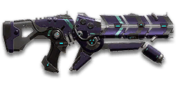

← Back to the VE-C Horizon comparison
Sage Guide · Vanu Sovereignty · Light Assault / Engineer
A 1,000-cert carbine for the Vanu Sovereignty Light Assault and Engineer — it fires a fan of three plasma pellets per trigger pull instead of one bullet. This page teaches you to win fights with it today.
The one-line verdict: the most accurate-feeling gun in the game and the strangest: its cone of fire is 0° in every stance, and all of its spread lives in the pellet fan — 3.36° wide from the hip, 0.99° tall when aimed. Keep the whole fan on target inside 25 m and it kills in 6 pulls (0.50 s); let pellets leak and it takes twice as long.

The VE-C Horizon · Vanu Sovereignty · 30-round magazine · 3 pellets per shot
Picture the scene, because you've probably lived it: you're sprinting across a courtyard, an enemy appears, and you do everything at once — hold the trigger down while you're still running, then press aim-down-sights (ADS) a split-second later, finger still down. The sight picture snaps in, it looks precise… and your bullets spray everywhere except the man in your crosshair. He kills you. It feels like the game cheated. It didn't — here's what actually happened.
A note on the drawings below: they show the classic version of this mistake, shared across the whole guide series — including the 7.0° sprint cone most guns carry. The Horizon is the exception: its cone caps at 0.99° from the hip and sits at 0° aimed. The lesson is identical, because on this gun the spray comes from the pellet fan, not the cone — section 05 draws the fan.
You started firing from a sprint, from the hip. Sprinting is the least accurate state in the game: your cone jumps straight to its 0.99° cap — and worse, your pellet fan is at its full 3.36° width before a single shot. Every hip shot widens the cone further still (+0.11° per shot, to that 0.99° cap in 9 shots).
Then you pressed ADS mid-hold — and nothing reset. Aiming down sights does not shrink a cone of fire that is already bloomed, and it does not gather a fan that has already spread. The scope only gives you a precise picture; the pellets keep flying out of the wide pattern you built while running and hipfiring. That's the whole mystery: accurate-looking aim, wildly inaccurate gun.
Two timers stack the deck further: your gun needs about 0.3 s to settle after a sprint, and raising the sight itself takes ~0.15 s. Trigger held through all of it means your first half-second of fire is pure confetti.
1 · Feet. Let go of sprint (and the trigger, if you're already holding it). Stop, or drop into a strafe — anything but a full sprint.
2 · Sight. Press ADS and let the sight come up. This takes a heartbeat — that's fine, nobody wins a duel in 0.15 s if you picked your moment. As a Light Assault your jump jets buy the space; as an Engineer your cover does.
3 · Trigger. Now fire. Starting from the aimed cone of 0°, your first pellets land where the dot points, and you control the fan from zero instead of inheriting a maxed-out cone.
Stop → aim → fire. If you take one habit from this entire page, take this one. You'll practise exactly this rhythm in the simulator in section 04.
Four beats, left to right — the same mistake the cards above describe, drawn out.
1 · SprintingYour cone starts maxed at 7.0° — the widest it can ever be.
2 · Trigger heldFiring from the hip while running — every shot adds bloom.
3 · ADS, mid-holdThe sight looks precise — but aiming down sights does not reset bloom.
4 · The sprayBullets fly out of the wide cone you built. The enemy walks away.
Same fight, done right. Each beat has a job, and the order is the whole lesson.
1 · StopLet go of sprint (and the trigger). About 0.3 s for the gun to settle.
2 · AimPress ADS and let the sight come up (~0.15 s).
3 · FireNow fire — from the aimed cone. First shots land where the dot points.
The exception — under ~8 m, skip the whole danceHipfire works, no ADS needed, and stopping is optional. Keep moving, strafe, and let the hipfire ring do the work.
Every enemy infantry has 1,000 health (500 shield + 500 health). Each trigger pull fires 3 pellets of 56 damage up close — 168 if all three land — fading to 42 per pellet (126 per pull) at long range. Headshots count double, leg shots count less (×0.9). Shots to kill here means trigger pulls, not pellets: one pull is three chances to hit.
| Range | Damage / pull | Head | Chest | Legs | Chest vs shielded Heavy |
|---|---|---|---|---|---|
| Close · 0–10 m | 168 | 3 | 6 | 7 | 9 |
| Mid · 10–60 m | 168→126 | 3 → 4 | 6 → 8 | 7 → 9 | 9 → 12 |
| Far · 60 m+ | 126 | 4 | 8 | 9 | 12 |
Perfect-accuracy times to kill: 3 head pulls ≈ 0.20 s, 6 chest pulls ≈ 0.50 s up close. At 600 RPM, full-damage output is 1,680 damage per second — if every pellet lands. At 38 m you're at 144 per pull (48 per pellet): 4 head pulls, 7 chest pulls, 11 against a shielded Heavy. In real fights you'll land maybe two of three pellets — still, this is why the head matters so much on this gun.
The catch, in one line: every number above assumes all three pellets land. If only 2 of 3 pellets land, a close-range chest kill takes 9 pulls (0.80 s) instead of 6 — 60% slower — and at long range it takes 12 pulls (1.10 s) instead of 8. That gap is the whole gun, and section 05 shows you why it happens.
Full power to 10 m, then a steady slide to minimum at 60 m. The line shows damage per trigger pull, all three pellets landing. No ammunition attachment changes this falloff — Capsulate and Unstable change the pellets, not the ranges.
One gun, four fighting styles. The right technique changes with distance — use the range finder below to see what your pellets do at any range, then learn the four bands underneath it. The finder assumes all three pellets land; the bands tell you when they won't.
How to fight hereAim down sights at the upper chest and neck. Fire in bursts of 5 pulls — the vertical fan stays torso-sized out to 25 m, so all three pellets still land.
Aim: centre of the chest, from the hip. Keep moving.
Scoping in costs you time and halves your move speed — at arm's length that gets you killed. From the hip the fan is a horizontal row 0.47 m wide at 8 m, which still fits across a chest, so all three pellets land. Strafe side to side (A/D) while firing so you're hard to track. As a Light Assault, a jump-jet hop over a doorway buys you the same half-second a Heavy buys with a shield.
Aim: neck / upper chest. Bursts of 5 pulls.
This is where the gun earns its keep: near-full 168 damage, a 0° cone, and a vertical fan that is only 0.43 m tall at 25 m — all three pellets land on the torso. Start your crosshair at the neck — the natural upward climb walks your pellets into the head, and 3 head pulls end the fight in a fifth of a second. Strafe while scoped; you're slower, but a moving target still beats a still one.
Aim: chest. Bursts of 5 pulls, pause between them.
Damage is sliding toward 126 and the aimed fan is growing — 0.86 m tall at 50 m, so the top and bottom pellets start leaking past the shoulders and hips. Fire a burst, release for a split second to let your aim reset, fire again. The recoil drifts up and to the right (8–10°), so pull your mouse gently down and to the left. Crouch or stand still when you can — it steadies the fan, even though the cone is 0° either way.
Aim: chest. Taps of 3–5 pulls at exposed targets only.
At 126 damage you need 8 chest pulls with every pellet landing — and at 60 m the aimed fan is 1.04 m tall, taller than the torso, so some pulls only land two pellets and the kill stretches to 12 pulls. Take these shots at stationary or fleeing targets, medics reviving, and engineers on turrets. Otherwise, your better play is to close the distance behind cover — or, as a Light Assault, over a roof. Knowing when not to shoot is a skill too.
Your accuracy is decided by two things before skill even enters it: what your body is doing (your stance sets the starting cone of fire) and what your finger is doing (holding the trigger grows that cone with every shot). The Horizon has no fire-mode switch — full-auto only — so "firing modes" are something you do with your finger, not a setting on the gun. And this gun breaks the usual rules: read the table twice, because it really does say what it says.
| Stance | Starting cone | What it means for you |
|---|---|---|
| Sprinting | 0.99° | Capped — the widest the cone can ever be on this gun, and it is still tiny. Sprinting hurts you differently here: you start firing with the hip fan at full width and bloom already building. This is the section 01 disaster, Horizon edition. |
| Hipfire, moving | 0° | Walking or strafing from the hip. The cone is 0° — but the pellet fan is 3.36° wide, so the fan, not the cone, decides whether your pellets hit. |
| Hipfire, standing | 0° | Your point-blank default. The 0.47 m fan at 8 m in section 05 is this stance drawn out. |
| Hipfire, crouched | 0° | Same 0° cone (0° if you crouch-walk, too). Crouching steadies your aim and shrinks your silhouette — it just doesn't tighten a cone that is already zero. |
| Aimed (ADS), feet planted | 0° | Standing or crouched makes no difference here — the cone is zero either way. This is why section 01's order still matters: it is the fan and the recoil you are managing, not the cone. |
| Aimed (ADS), strafing | 0° | Same 0° start, and it never blooms while aimed — but you move at half speed (0.5×). Strafe between bursts to stay hard to hit; plant your feet during each burst. |
Yes, the table really does read 0° almost everywhere. There is no strafing penalty on this gun — no "ADAD window" to manage, because the moving and standing cones are both 0° and the bloom that would separate them is 0° aimed. The thing that grows when you hold the trigger from the hip is bloom: +0.11° per pull, up to the 0.99° cap in 9 pulls. Aimed, bloom is 0° per pull — the cone never grows at all. What grows instead is recoil, and that is the next table's job.
| Mode | How your finger does it | Use it at |
|---|---|---|
| The mag dump | Hold the trigger and don't let go | Point blank only, or suppressing a doorway. Recoil climbs 0.4–0.45° per pull (first pull 2.22×) and walks your fan off the target — past ~8 pulls you're spraying, not aiming. |
| Bursts — the default | Hold for 5 pulls, release ~0.15 s, hold again. 6–8 pulls is fine while you're learning | Almost everything, 8–50 m. Each release resets your aim — the cone never blooms aimed, so the release is about recoil, not the cone. |
| Tap-fire | Short taps of 3–5 pulls, or single clicks, with a real pause between | 50 m and out, at exposed or stationary targets. Slow, but every pellet goes where the dot is. |
A target 30 m away, aiming down sights. Press and hold FIRE (mouse, touch, or hold Space with the button focused) and watch the holes climb the longer you hold — that's recoil, not bloom: on this gun the aimed cone is 0° and never grows, so the drift you see is the muzzle kicking up and right with every pull. Release, let your aim reset, fire again. Aim for bursts of 5; 6–8 is tolerable while you're new. This practice window is shared by the whole Sage series: it's driven by a weapon profile plugged into the window — here the Horizon's (600 RPM, 0° starting cone, 0° bloom per shot, target at 30 m) — and the only spread is the recoil climb, exactly as the numbers say.
Aimed cone of fire — on this gun it never fills: 0° cone, 0 bloom. The bar stays empty on purpose.
Your bursts will be graded here — green at 5 pulls, tolerable up to 8.
Some things are easier to show than to say. Here's what your pellets actually do: how wide the fan is at 8 metres, what a good burst rhythm looks like when bloom is zero, and what the 2x sight really changes. The hands-on version — holding the trigger yourself — is the practice window in section 04.
A full-size target 8 m away — an arm's-length room fight. The dots show where one trigger pull's three pellets land around your aim point (the chest). Sizes are drawn to scale from the gun's real pellet-spread numbers: 3.36° from the hip, 0.99° aimed.
Read it this way: at 8 m the hip fan is a 0.47 m row across the chest — all three pellets land, which is why hipfire works point-blank. But the fan only grows with distance while the man doesn't: at 30 m it is 1.76 m wide — wider than the man himself — so the outer pellets fly past him on both sides and you are paying for three pellets and landing one or two. Aim down sights and the fan turns vertical and tightens to 0.99°: 0.52 m tall at 30 m, still on the torso. That flip — horizontal and wide from the hip, vertical and narrow aimed — is the whole gun. (Fan sizes use the real geometry: spread = 2 × distance × tan(fan ÷ 2).)
Aimed, your cone never blooms — so what punishes a long hold on this gun is recoil: the first pull kicks 2.22×, and every pull climbs 0.4–0.45° up and to the right. From the hip, bloom joins in (+0.11° per pull, to the 0.99° cap in 9 pulls). Same 18 pulls, two very different outcomes:
The target pattern is bursts of about 5 pulls — that's the ideal. Bursts of 6–8 are fine while you're new (call it newbie tolerance). Past that, recoil (0.4–0.45° per pull aimed, and 0.11° of hip bloom per pull on top from the hip) keeps moving your fan with every pull, so the extra pellets mostly decorate the wall behind your enemy instead of hitting him. Short bursts also leave you pulls for the second enemy — remember, the magazine is only 30 pulls, five close-range kills at most.
No zoom. The target at 35 m is small but the view is wide open — you see the crate, the tower, and the next enemy coming. Fast to aim, nothing blocks your edges. Best inside ~40 m.
Same target, same 35 m — but he looks twice as tall, so placing the vertical fan on his chest and head gets much easier. The price: your view narrows to the round window, the crate and tower are gone, and close targets feel fast and huge. Best at 25–50 m.
That's the whole 30-cert decision from section 06 in one picture: 1x for awareness, 2x for precision. Most veterans carry both and swap per base — indoors 1x, open ground 2x.
Honest news first: the Horizon arrives bare — iron sights, no rail, no barrel, standard ammo. Nothing here is free except the iron sights, so buy in the order shown and stop whenever the gun feels right. Everything below is an optional sidegrade, not an upgrade. Note the thin bench: this gun has no Laser Sight, no suppressor, no compensator, and no Soft Point or High Velocity ammo — the slots it does have are the ones that matter.
The default post-and-notch sights. Usable, but a reflex dot is a real upgrade on a gun you'll aim as much as this one.
Good: nothing costs nothing — they work at every range until you buy a sight.
Bad: precision past 25 m — the thick front post covers a head-sized target at range. That's what the reflex sights fix.
A clean open-diamond reflex sight with no zoom. Your best all-round option once you own it.
Good: everywhere indoors and out to ~40 m — which is most PlanetSide fights.
Bad: picking out targets past 50 m; that's what the 2x is for.
Doubles your view magnification. Costs almost nothing — the price of a few kills.
Good: open-field bases, tower fights, and your 25–50 m burst game — the vertical fan is easier to place on a chest at 2x. Swap between 1x and 2x per fight.
Bad: tight indoor rooms — the zoom makes close targets feel fast and huge.
Infrared optic with no magnification: nearby targets glow against a dark view, and it sees through smoke.
Good: night fights, smoky doorways, spotting infiltrators by their outline.
Bad: daytime and long range — its view is short-ranged and washes out in bright light.
A magnified 3.4x target-acquisition scope for open-field combat.
Good: almost nothing a beginner does — recoil magnifies too, and it tunnels your vision.
Bad: any fight inside 30 m, which is where you'll spend your first hundred hours — and where this gun actually works.
The Horizon has no compensator, suppressor, or heavy barrel on offer at all — the only barrel in the shop is the flash hider below. Plenty of veterans run this slot empty forever.
Good: your first weeks, and honestly most weeks after that. Spend certs on your suit and jump jets first.
Bad: nothing — there's no downside to an empty slot.
The Vanu name for a flash suppressor: it replaces your bright muzzle flash with a tame puff of smoke — but you appear on enemy minimaps from 15 m farther away when you fire. It changes no damage number.
Good: night fights where your own flash blinds you. A comfort pick, nothing more.
Bad: as an early purchase — it changes no fight outcome, and the minimap cost is real. Buy it last, if ever.
The Horizon ships with an empty rail. Plenty of veterans run it empty until they pick a playstyle.
Good: your first weeks. Spend certs on your suit and jump jets first.
Bad: nothing — there's no downside to an empty slot.
Cuts side-to-side recoil by 25% (0.15° → 0.11°), keeping your bursts on a single target. Tiny cost: weapon swap is 0.15 s slower (0.55 s → 0.70 s).
Good: the default for aimed, mid-range play — leave it on until you deliberately build around the empty reload instead.
Bad: nothing meaningful. It only stops helping if you never aim down sights.
Removes the speed penalty for reloading an empty magazine — an empty reload takes the short 1.6 s instead of the long 2.45 s. But the weapon recoils more harshly in one direction while firing.
Good: if you keep getting caught on an empty 30-round magazine mid-fight — it forgives exactly that mistake.
Bad: as a first rail buy — the Forward Grip helps every burst, this one only helps the reloads you should be avoiding anyway (habit 4).
A torch whose beam reveals cloaked infiltrators. Toggle it with the attachment key (X by default).
Good: hunting a stalker infiltrator camping your capture point — sweep corners with it.
Bad: as your everyday rail — it gives zero accuracy help, and the beam advertises your position.
Three pellets per pull, 56 damage each up close. The baseline everything else is judged against.
Good: everything, until you know which of the two special ammos fits how you fight.
Bad: nothing — it is the honest default, and the headshot multiplier stays at the full ×2.
Consolidates the damage into two pellets of 84 instead of three of 56 — same 168 per pull up close, same 126 at long range — tightens the pellet spread by 75% from the hip (3.36° → 0.84°) and 50% aimed (0.99° → 0.50°), and costs 4 rounds of magazine (30 → 26).
Good: nearly always — a tighter fan means more pulls land all their pellets, which is the entire damage model. The hip fan at 8 m shrinks from 0.47 m to 0.12 m.
Bad: nothing much — 26 rounds is four fewer pulls per magazine, and each pull still kills in the same number of hits. The cost is real but small.
Makes each projectile significantly bigger, so near-misses still connect — but the headshot bonus drops 80%, from ×2 to ×1.2. Chest damage is unchanged; head pulls up close go from 3 (0.20 s) to 5 (0.40 s), barely faster than the 6 chest pulls (0.50 s).
Good: if your aim is still developing and you want forgiveness on body shots — bigger pellets paper over small misses.
Bad: the moment you can aim at a neck: it throws away the headshot game that makes this gun kill in 0.20 s. Never pair it with a headshot habit.
Sidegrade note: the free Solstice VE3 kills in 7 chest shots (0.52 s); the Horizon costs 1,000 certs and kills in 6 pulls (0.50 s) when the whole fan lands — you are buying the fan and the perfect cone, not a faster kill.
1,000 certs · The gun itself
What 1,000 certs buys you before a single attachment. Genuinely usable — learn the fan on this before spending anything.
230 certs in attachments · Recommended
The best value in this whole guide. Covers every fight from a doorway to a tower courtyard — and the tightened fan forgives the most misses.
130 certs in attachments · Rooftop play
For Light Assaults who fight from rooftops and balconies at 25–50 m: the 2x places the vertical fan, the standard ammo keeps the full ×2 headshot, and the jump jets get you to the next roof before the return fire arrives.
330 certs in attachments · Indoor hold
Built to hold a capture-point room: a tightened fan, no empty-reload penalty, and a hidden muzzle flash in the dark. Weak in a fair open fight, so don't take fair open fights: fight from cover, at range, behind your turret.
Every pull is three pellets, and one pellet missing is a third of your damage gone. Centre the fan on the chest, not on an edge — a fan centred on a shoulder loses a pellet off the side, and your 6-pull kill becomes a 9-pull kill (0.80 s instead of 0.50 s). Capsulate Ammunition tightens the fan and forgives this, but the habit is free and it stacks.
Headshots deal double damage: 3 head pulls (0.20 s) versus 6 to the chest (0.50 s) up close — 60% faster, and 57% faster at long range (0.30 s versus 0.70 s). Don't aim at the head directly — aim at the neck and let the gun's upward climb carry pellets two and three into the skull. It's the single biggest damage upgrade you own, and it's free. Just remember the fan: aimed, it runs vertically, so at 30 m part of it will always be chest — the head pulls are a bonus on top of chest damage, not a replacement for it.
Five pulls is the ideal burst; release the trigger for a heartbeat between bursts. Aimed, your cone never blooms — but recoil climbs 0.4–0.45° per pull with a 2.22× first-pull kick, and from the hip, bloom adds 0.11° per pull on top. Holding the trigger past ~8 pulls at range means later pellets fly around your target, not into it. Your accuracy resets on every release, and your hits per magazine roughly double.
Thirty pulls is five close-range chest kills at most (6 pulls each) — and fewer the moment pellets leak. Reloading with even 1 pull left takes 1.6 s; an empty gun takes 2.45 s — an eternity mid-fight. After two or three kills, duck behind cover and reload early. Treat the last 10 pulls as your emergency reserve, not your working magazine.
Walk with your crosshair at head height, pointed where an enemy's head will appear — a doorway edge, a corner, stairs. Most beginners lose fights in the half-second spent dragging the crosshair onto target. While firing, tap A/D to strafe: on this gun strafing costs you nothing in cone terms (0° moving, 0° standing), so there is no reason to stand still. As a Light Assault, a jump-jet hop sideways breaks their aim entirely — land shooting, not landing and then shooting.
Your damage, your fan, and your 0° cone all shine at close-mid range. Sprint between cover, use buildings and rocks as stepping stones — or rooftops, if you're a Light Assault — and arrive at your range before opening fire. The player who chooses the range usually wins the duel — make it you.
Every gun has a price. Here's where the Horizon pays — and the habit that covers each hole.
The hip fan is wider than a torso past ~8 m, and the aimed fan is taller than one past ~50 m. Every leaked pellet is damage you paid for and didn't deal: with only 2 of 3 pellets landing, a close chest kill stretches from 6 pulls (0.50 s) to 9 (0.80 s), and a long-range one from 8 (0.70 s) to 12 (1.10 s).
Play around it: hipfire under 8 m, aim past it, and fit Capsulate Ammunition — it tightens the hip fan by 75% and the aimed fan by 50%.
The first pull of every burst jumps with a 2.22× multiplier — 0.89–1.00° of climb before the burst even starts, drifting up and to the right (8–10°). Yank the trigger and your opening pellets climb off the head.
Play around it: start each burst a touch low and left and let the climb walk into the target — and fit the Forward Grip, which trims the sideways half of the climb by 25%.
Thirty pulls is five close-range kills at most, and the reload is 1.6 s with pulls left but 2.45 s on empty — an age when a second enemy rounds the corner.
Play around it: burst discipline (habit 3) and early reloads (habit 4) — and the Vented Power Core forgives the empty reload entirely, if you'd rather buy the fix than learn the habit.
A headshot needs pellets on the head, and the aimed fan is a vertical row — at 30 m it is 0.52 m tall, so part of it is always chest. Your 3-pull head kill assumes all three pellets find the skull, which is aim plus a little luck. Unstable Ammunition makes it worse, cutting the headshot bonus from ×2 to ×1.2.
Play around it: aim at the neck and take head pellets as a bonus on top of chest damage — and never run Unstable Ammunition once you can aim at a neck.
The gun costs 1,000 certs, and there is no Laser Sight, no suppressor, no compensator, and no Soft Point or High Velocity ammo to buy your way out of its weaknesses. The only barrel hides your muzzle flash and costs you 15 m of minimap stealth.
Play around it: buy the gun for the fan and the 0° cone, not for the attachments — the three purchases that matter are the Lyra R1, the Forward Grip, and Capsulate, and together they cost 230 certs.
Open the world map, travel to VR Training, and run these on the target dummies. Five minutes before a play session beats an hour of dying confused.
Aim at a wall 20 m away and empty a full magazine without touching the mouse. Watch the pellet pattern climb up and to the right — that's your gun's fingerprint, and the first pull jumps hardest (2.22×). Repeat, this time pulling down-left, until the group stays fist-sized.
Shoot a wall at 8 m from the hip (a horizontal row 0.47 m wide), then at 8 m aimed (a vertical row 0.14 m tall), then at 30 m aimed (0.52 m tall). Learn the fan's shape at each range until you can picture it before you pull the trigger — that picture is your real crosshair on this gun.
At 30–40 m, kill dummies with bursts of 5 pulls, releasing the trigger fully between bursts. If a burst goes wide, shorten it. Goal: whole kills without a single wild pull — even though your aimed cone is 0° and never blooms, recoil still moves the later pulls.
Pick a dummy, stand 5 m away, and circle it with A/D while hipfiring it down without stopping. The fan is only 0.29 m wide at 5 m, so all three pellets land while you move — this is your point-blank survival skill, and on this gun strafing costs you nothing in cone terms.
Fire exactly 18 pulls, step behind a pillar, reload, repeat. Train your hands to reload early and only in cover until it's automatic — with a 1.6 s short reload and a 2.45 s empty one, in real fights you'll do it without thinking, which is the point.